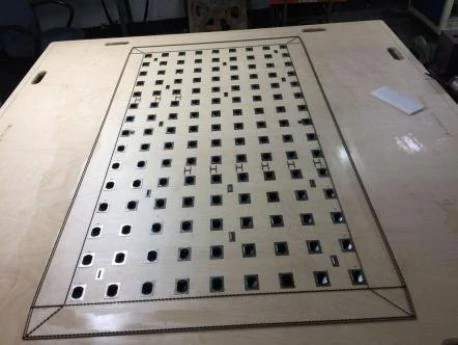
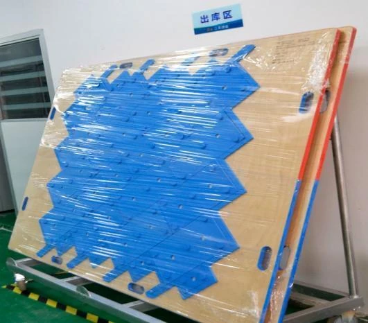
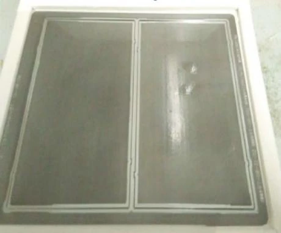
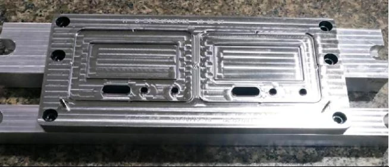
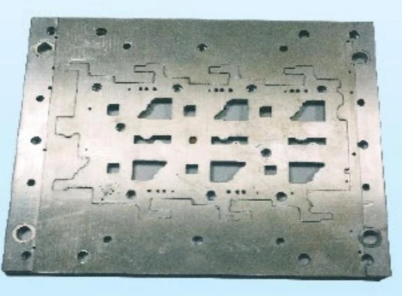
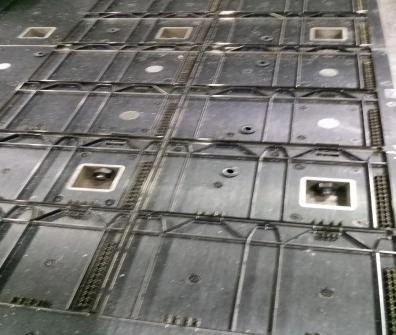
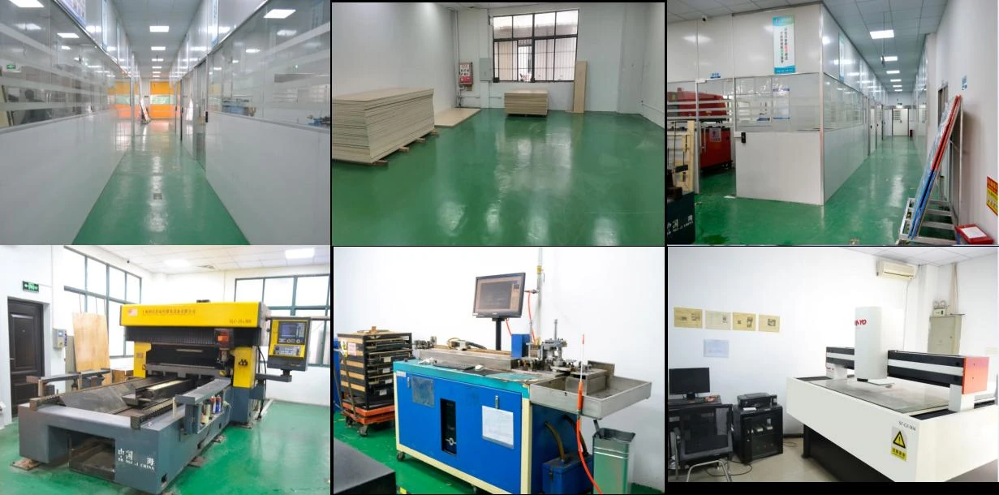
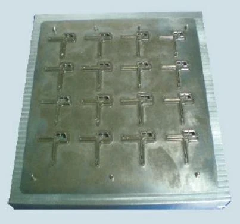
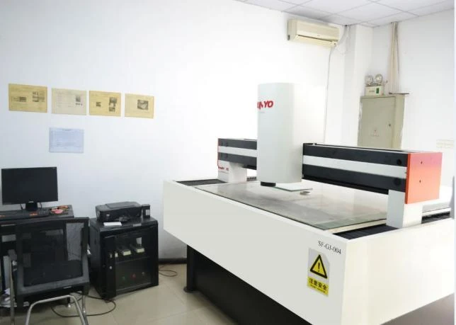

01
光学膜激光刀模
面向增光、扩散、反射及复合膜，支持大尺寸与自动落料结构。

覆盖激光刀模、蚀刻/雕刻刀模、线切割钢板刀模与包装类刀模，面向光学膜、3C 电子、医疗、新能源与印刷包装。
FLAT DIE FAMILY
不同结构覆盖从大尺寸光学膜到小孔电子材料与高精度包装模切。

面向增光、扩散、反射及复合膜，支持大尺寸与自动落料结构。
支持多种刀锋角度、单双镜面两段刀与节材排版。

适用于保护膜、胶带与光学膜，精度可达 ±0.03 mm。

适用于较厚 FPC、PC/PET，可选铁氟龙或镜面处理。

热处理钢板与进口刀片组合，刀片钝化后可重复更换。

三明治铝板与木制结构，面向高精度烟包及印刷包装。
OPTICAL FILM CONTROL
刀锋、泡棉、排气、磁铁、封边与运输包装共同影响洁净度和成品质量。
进口刀材，支持 28°、30° 单镜面或双镜面结构，特殊规格可采用涂硅刀。
通过垫刀泡棉、泡棉豆豆、高低黏双面胶及防尘网，减少异物与压伤。
导气槽、钢片和强力磁铁配合，保证刀板平整与排气稳定。
刀模四周封边并采用缠绕膜包装，降低灰尘、异物及运输碰伤风险。
EQUIPMENT & INSPECTION
自动弯刀、激光切割、CNC 雕刻与大范围 2.5 次元检测形成制造闭环。

激光刀模生产车间
蚀刻刀模
±0.01 mm 检测能力FLAT DIE INQUIRY
请提供材料、尺寸、公差、自动落料孔、设备台面及计划批量。